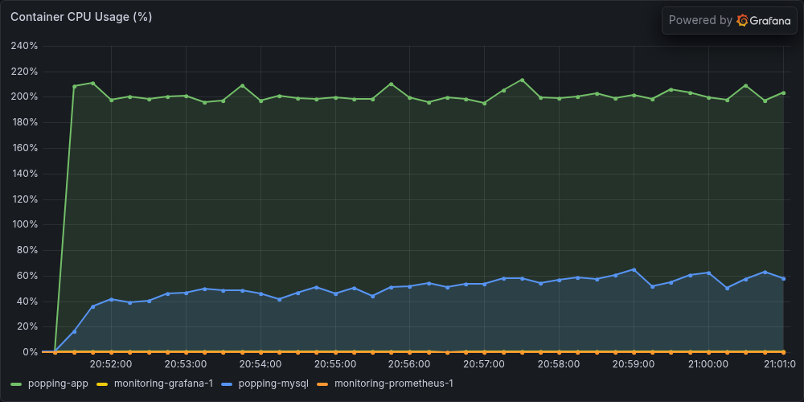
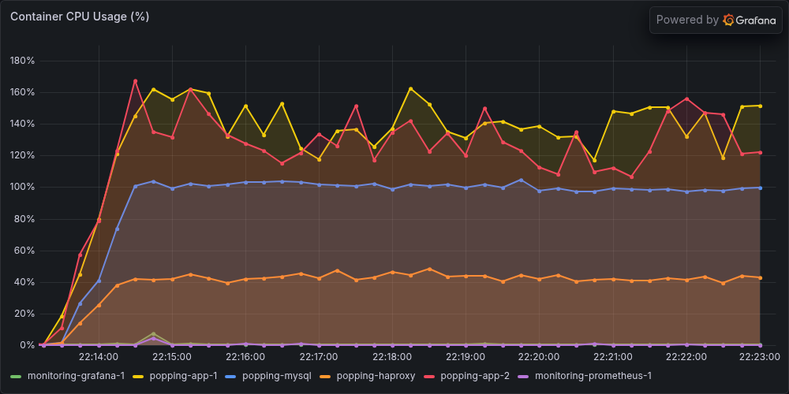
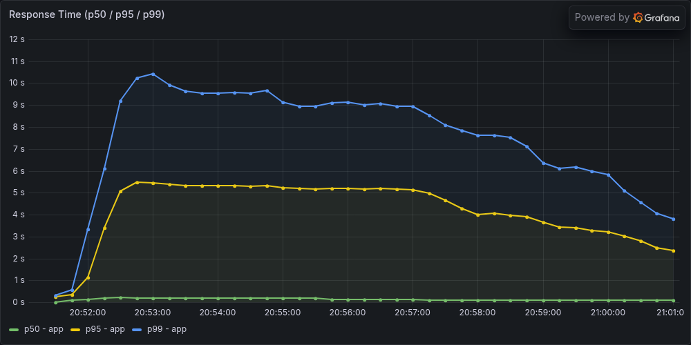

애플리케이션 Scale Out
500 VUser 부하에서 App CPU가 200%(2코어 상한)로 포화되어 요청이 대기열에 쌓였습니다.
HAProxy 로드밸런서와 App 2대 수평 확장으로 병목을 해소했습니다.
코드 최적화 이후에도 App CPU는 포화 상태였습니다
댓글 트리 조회 최적화로 응답시간을 28% 개선했지만, 500 VUser 부하테스트에서 App CPU는 여전히 200%(2코어 상한)에 도달했습니다. CPU가 포화되면서 요청이 처리 대기 상태에 놓였고, P99 응답시간이 10초 가까이 치솟았습니다. 코드 최적화만으로는 한계가 있다고 판단해, App 인스턴스를 추가하는 수평 확장을 선택했습니다.
Scale Up vs Scale Out
| 전략 | 장점 | 단점 |
|---|---|---|
| Scale Up (CPU 증가) | 구성 변경 없음, 즉시 효과 | 단일 장애점, 비용 급증, 한계 존재 |
| Scale Out (인스턴스 추가) ✓ | 선형 확장, 고가용성 확보 | LB 필요, 세션/캐시 공유 문제 |
아키텍처 변경
Before: Client → App (2cpu/2GB) → MySQL (1cpu/1GB)
After: Client → HAProxy (LB) ─┬─ App-1 (2cpu/2GB) ─┬─ MySQL (1cpu/1GB)
└─ App-2 (2cpu/2GB) ─┘
왜 HAProxy인가 — Sticky Session이 핵심 요구사항
세션 기반 인증을 사용하므로 같은 사용자의 요청이 항상 같은 인스턴스로 가야 세션이 유지됩니다. 로드밸런서 후보를 Sticky Session 지원 방식으로 비교했습니다.
| 로드밸런서 | Sticky Session (오픈소스) | 비고 |
|---|---|---|
| Nginx (ip_hash) | 같은 IP만 가능 | JMeter 500 스레드가 전부 같은 IP → 한쪽 쏠림 |
| Nginx (hash $cookie) | 첫 요청 시 쿠키 없음 → 쏠림 | 첫 요청 분산 불가 |
| HAProxy (cookie insert) ✓ | 첫 요청부터 균등 분산 | 추가 모듈 불필요 |
cookie insert 동작 방식
- 첫 요청: 쿠키 없음 → round-robin 분산 → 응답에
SERVERID=app1쿠키 자동 삽입 - 이후 요청: 쿠키 기반으로 동일 인스턴스 고정
frontend http_front
bind *:9091
default_backend app_servers
backend app_servers
balance roundrobin
cookie SERVERID insert indirect nocache
server app1 popping-app-1:9091 check cookie app1
server app2 popping-app-2:9091 check cookie app2
Redis 없이 가능한 이유
Scale Out에는 일반적으로 세션/캐시 공유를 위한 Redis가 필요하다고 알려져 있지만, Sticky Session을 사용하면 이번 단계에서는 불필요했습니다.
* Sticky Session의 한계: 인스턴스 장애 시 해당 인스턴스에 붙어있던 사용자의 세션이 유실됩니다. 고가용성이 필요해지면 Redis Session 도입이 다음 단계입니다.
동일 조건 부하테스트로 개선을 검증했습니다
댓글 505만 건, 좋아요 735만 건 데이터에서 500 VUser로 10분간 동일한 시나리오를 실행했습니다.
| 지표 | Before (App 1대) | After (App 2대) | 변화 |
|---|---|---|---|
| TPS | 274/s | 527/s | +92.3% |
| 평균 응답시간 | 867ms | 32ms | -96.3% |
| P95 응답시간 | 4,799ms | 93ms | -98.1% |
| P99 응답시간 | 7,511ms | 201ms | -97.3% |
| 총 요청 수 | 164,601 | 316,041 | +92.0% |
| 에러율 | 0% | 0% | 동일 |
CPU 사용률 변화

App 1대가 약 200%로 CPU 상한(2코어)에 도달했다. MySQL은 50~60% 수준.

App-1, App-2가 각각 120~150%로 여유가 생겼다. 대신 MySQL이 100%에 도달 — 병목이 이동했다.
응답시간 변화

P99 약 10초, P95 5초대. App CPU 포화로 요청이 큐에 대기하며 응답시간이 급증한다.

P99 100~350ms, P95 50~100ms로 대폭 개선. App-1과 App-2가 균등하게 부하를 분담한다.
분석 — 병목의 이동
Before에서 App CPU가 포화 상태였기 때문에, App을 추가하자 처리량이 선형에 가깝게 증가했습니다 (1.92배, 이론상 2배 대비 96%). 평균 응답시간이 96% 감소한 핵심은 CPU 포화 해소로 큐잉 지연이 사라진 것입니다.
"Scale Out 후 병목은 사라진 것이 아니라 MySQL로 이동했습니다. MySQL이 1cpu 100%에 도달해, App을 더 추가해도 TPS 향상은 제한적입니다."
병목이 MySQL로 이동했다면?
다음 사례에서 MySQL Read Replica 도입으로 이동한 병목을 해소한 과정을 확인할 수 있습니다.